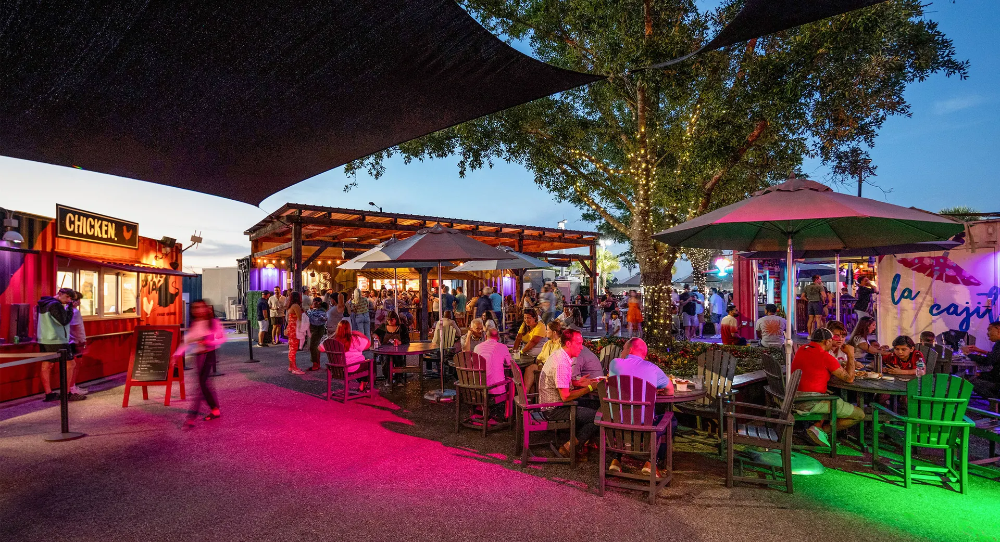

Boxi Park Lake Nona
Someone looked at forty-foot shipping containers and saw Lake Nona's best party, and they were right. Boxi Park stacks the boxes into a one-of-a-kind open-air hangout where you can graze lobster rolls from Claw & Order, tacos from Canonita, and housemade burgers while a live band plays and the dog races around the pup park. The lineup never sits still, with rotating pop-ups under the Before It's Gone banner, beach volleyball, and drinks from Bar Nona and Hops and Vine. Bring everyone.